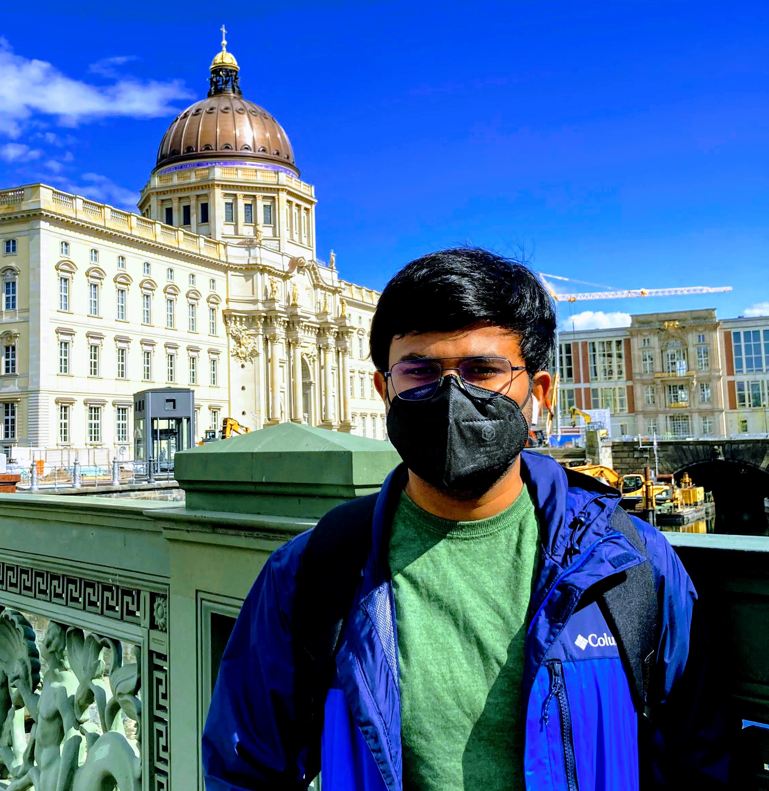

|
Rishav
Hello!
My name is Rishav. I am currently employed at DFKI, Kaiserslautern as a research engineer. I am currently designing algorithms for agricultural robots for precision farming. I am also working on keypoint detection & description.
I graduated from BITS Pilani, India with an undergraduate degree in Computer Science in 2020.

My broad research interests lies at the intesection of computer vision and robotics. My long-term research goal is to develop data efficient solutions that can generalize well to dyanmic environmental changes. Most modern-day systems work under highly constrained environments (like robots in warehouses), this makes their application extremely limited.
I completed my bachelor thesis at DFKI under Prof. Dr. Didier Stricker. I worked on Deep Learning for Scene Flow Estimation using monocular camera & sparse LiDAR.
CV /
Projects /
Publications /
Activities /
Github /
Blog /
My Failures
Other Interests
While I am not working, I like to read about historical events, specially related to ancient civilizations or listen to music from the 80s (rock). I am also a part time sociologist. I am a fan of historical dramas. I like to play badminton and run marathons. Here's a TODO:
Contact
Email: f2016108p@alumni(.)bits-pilani(.)ac(.)in
Twitter: Rishav's Twitter
Latest
|
|